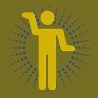

| | username // |
krisbulanyi
| | real name // |
Kris Bulanyi
| | picture // |

| | blurb // |
In my session you can expect to be hearing trance, house, anthems..
and maybe some breaks, depending on how I feel at the time.
How would I describe my DJ style.......hrmmmm....... housy, but at the same time kinda trancy...... I like to have more than one style of dance music in my sets. A good 90 minutes of dance radio is a good tune selection, lots of bass - and at the end of it all it has to make you think "FUCK THAT WAS WICKED SHITE!!!"
My favourite track of the moment is....ummmmmm ... war of the worlds - eve of the war ( hybrid remix ) Favourite DJs would have to be Timo Maas, Tom Harding, Darren Emerson and Carl Cox.
My tip for budding DJs would be to spend as much time as you can on your decks. I was inspired to submit to the noise Mix Up and Alchemy Guest DJ sessions because it was an opportunity to take my DJ-ing further. I am hoping that these will lead to more DJ work. Thanx heaps to dad, mum, and all the lads back up in Dorrigo.
Kris is one of noise and triple j's talented young DJs picked to do a 90 minute set on triple j's Mix Up. Tune in at 11.30 pm every Saturday night during October. Kris's set goes to air on October 20th.
Kris is also a guest Alchemist. Saturday nights in October, SBS Radio's Alchemy stretches to three hours from 11 pm, with an hour each given over to three disc spinning bods, until 2 am. Tune into Alchemy, something different, at 11pm to midnight, 6 nights a week (Saturday to Thursday) and on 6am to 7am (Saturday and Sunday).
For more information on what noise is on ABC, got to www.abc.net.au/noise, and to check out the noise on SBS, go to the noise link on www.sbs.com.au
| | web address // |
| | age // | age not supplied
| | creative stuff // |
| | email // |
email Kris
|
|
|